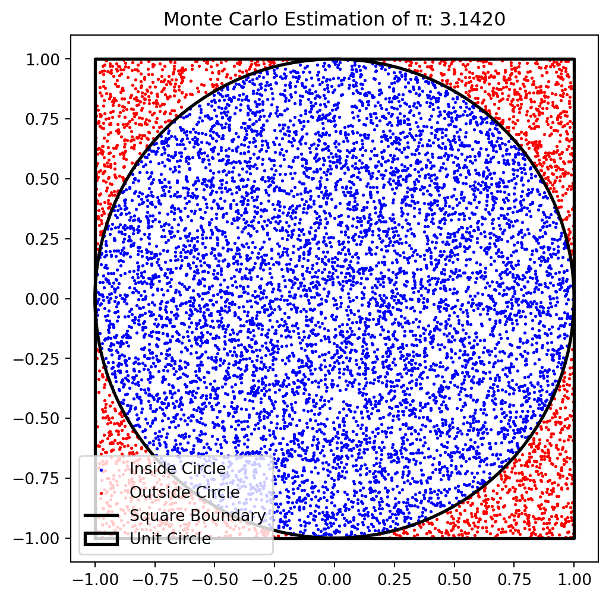
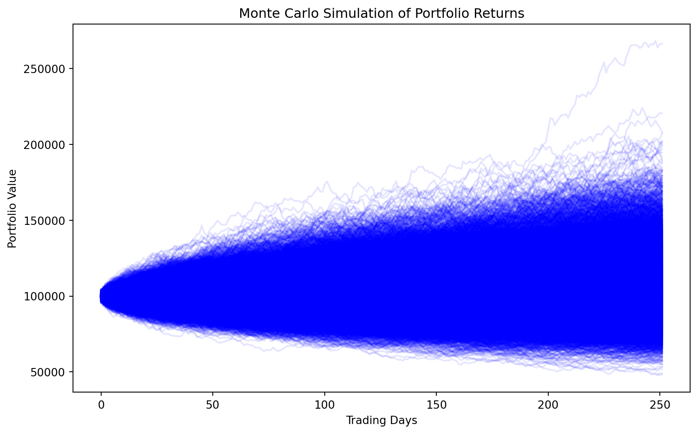

Monte Carlo simulations are a class of computational algorithms that use repeated random sampling to obtain numerical results. Random number generation by a computer typically relies on deterministic algorithms, known as pseudo-random number generators (PRNGs), which produce a sequence of values that only appear random. These algorithms start from an initial seed and repeatedly transform it with a mathematical function to produce a new number each time. Although true randomness cannot be achieved purely with deterministic code, PRNGs are sufficient for many applications such as simulations and gaming. In cases where a higher degree of randomness is required—for example, in cryptography—computers gather real-world data (e.g., from hardware noise) to generate true random numbers, which do not follow a purely deterministic pattern.
Monte Carlo methods are widely used in fields such as finance, engineering, physics, and risk management to solve complex problems that involve stochastic elements and are too difficult or inefficient to solve analytically or by other numrical methods. They are particularly useful when solving problems that involve: - High-dimensional spaces. - Uncertainty and randomness. - Complex integrations or optimizations that are difficult to solve analytically.
By simulating a large number of possible outcomes, Monte Carlo methods provide an approximation to a solution that is often more practical than attempting to derive an exact answer.
2. Principle of Monte Carlo Simulations
The principle of Monte Carlo simulations is based on the concept of using randomness to approximate deterministic problems. The core idea is to use random sampling to generate a large number of possible scenarios, analyze the outcomes, and estimate probabilities or expected values. This method is particularly useful when dealing with systems that have inherent uncertainty or when an exact analytical solution is difficult to obtain.
Steps Involved in a Monte Carlo Simulation:
Define the Problem: Identify the mathematical or physical system being modeled.
Generate Random Inputs: Use random number generators to create sample inputs that represent possible states of the system.
Perform Simulations: Compute the outcome for each randomly generated input using a defined model.
Aggregate Results: Analyze the distribution of outcomes to derive probabilities, expected values, or other statistical measures.
Interpret and Apply Findings: Use the insights obtained to make informed decisions or refine the model.
Example Illustration:
If we want to estimate the probability of a financial portfolio achieving a certain return, we can: - Generate random market conditions (e.g., stock prices, interest rates). - Compute portfolio returns under each condition. - Analyze the distribution of simulated returns to assess risk and return characteristics.
Monte Carlo methods leverage the Law of Large Numbers, which states that as the number of simulations increases, the estimate converges to the true expected value.
3. History and Applications of Monte Carlo Simulations
Monte Carlo methods were first developed during the 1940s by scientists working on nuclear weapons research, including John von Neumann and Stanislaw Ulam. The name “Monte Carlo” was inspired by the famous casino in Monaco, reflecting the method’s reliance on randomness and probability.
Monte Carlo simulations have since been applied in various domains: - Finance: Option pricing, portfolio risk management, and credit risk modeling. - Physics and Engineering: Particle simulations, fluid dynamics, and reliability analysis. - Healthcare and Epidemiology: Disease spread modeling and risk assessment. - Business and Economics: Decision-making under uncertainty, supply chain risk management.
4. Implementing Monte Carlo Simulations in Python
Python provides several libraries to implement Monte Carlo simulations effectively, including numpy, scipy, and matplotlib. Below, we demonstrate multiple examples of Monte Carlo simulations.
4.1. Estimating π using Monte Carlo Simulation
A classic example of Monte Carlo methods is estimating the value of π by simulating random points inside a unit square and counting how many fall inside a quarter circle.
import numpy as npimport matplotlib.pyplot as pltdef monte_carlo_pi(num_samples):""" Estimate the value of π using the Monte Carlo method. - Generates `num_samples` random points inside a square [-1,1] x [-1,1]. - Determines how many points fall inside the unit circle. - Uses the ratio of points inside the circle to estimate π. - Visualizes the simulation with a scatter plot. """# Generate random points x = np.random.uniform(-1, 1, num_samples) y = np.random.uniform(-1, 1, num_samples)# Check if points are inside the unit circle inside_circle = x**2+ y**2<=1# Estimate π pi_estimate = (inside_circle.sum() / num_samples) *4# Create figure fig, ax = plt.subplots(figsize=(6,6))# Plot points ax.scatter(x[inside_circle], y[inside_circle], color='blue', s=1, label="Inside Circle") ax.scatter(x[~inside_circle], y[~inside_circle], color='red', s=1, label="Outside Circle")# Draw square boundary square_x = [-1, 1, 1, -1, -1] square_y = [-1, -1, 1, 1, -1] ax.plot(square_x, square_y, color='black', linewidth=2, label="Square Boundary")# Draw circle boundary circle = plt.Circle((0, 0), 1, color='black', fill=False, linewidth=2, label="Unit Circle") ax.add_patch(circle)# Set limits and labels ax.set_xlim(-1.1, 1.1) ax.set_ylim(-1.1, 1.1) ax.set_aspect('equal') ax.legend() ax.set_title(f"Monte Carlo Estimation of π: {pi_estimate:.4f}")# Show plot plt.show()# Run simulationmonte_carlo_pi(10000)

4.2. Monte Carlo Simulation for Portfolio Returns
Monte Carlo simulations can be used to estimate the expected return of an investment portfolio over time.
Assumptions in this simulation:
Log-normal distribution of returns: Asset returns follow a normal distribution when compounded over time.
Independence of daily returns: Returns are randomly sampled from the normal distribution and do not exhibit autocorrelation.
Constant mean and volatility: The expected return (mean) and volatility (standard deviation) are assumed to remain constant over the time horizon.
No external shocks: The model does not account for external factors like market crashes, policy changes, or economic shifts.
import numpy as npimport matplotlib.pyplot as pltdef monte_carlo_portfolio_returns(initial_investment=100000, num_simulations=10000, time_horizon=252, mu=0.07, sigma=0.2): np.random.seed(42) # For reproducibility simulated_returns = np.random.normal(mu / time_horizon, sigma / np.sqrt(time_horizon), (num_simulations, time_horizon)) portfolio_values = initial_investment * np.cumprod(1+ simulated_returns, axis=1) expected_return = np.mean(portfolio_values[:, -1]) plt.figure(figsize=(10,6)) plt.plot(portfolio_values.T, alpha=0.1, color='blue') plt.title('Monte Carlo Simulation of Portfolio Returns') plt.xlabel('Trading Days') plt.ylabel('Portfolio Value') plt.show()return expected_returnexpected_return = monte_carlo_portfolio_returns()print(f'Expected Portfolio Value after One Year: ${expected_return:.2f}')

Expected Portfolio Value after One Year: $107047.67
5. Advantages and Limitations of Monte Carlo Simulations
5.1. Advantages
Versatility: Can be applied to a wide range of problems in different fields.
Scalability: Can handle complex and high-dimensional problems that are difficult to solve analytically.
Flexibility: Works well with stochastic processes and probabilistic modeling.
5.2. Limitations
Computationally Expensive: Requires large numbers of simulations for accurate results.
Dependent on Randomness: The accuracy of results improves with more iterations, but random variability exists.
Model Sensitivity: Results can be sensitive to the assumptions and distributions used in the simulation.
6. Conclusion
Monte Carlo simulations are a powerful tool for modeling uncertainty and solving complex problems in various fields. By leveraging Python, practitioners can efficiently implement Monte Carlo methods for applications ranging from finance to engineering. While Monte Carlo simulations provide valuable insights, they also come with computational costs and sensitivity to input assumptions. Understanding their strengths and weaknesses allows for more effective utilization in decision-making and risk management.